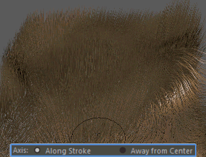

提示： 当笔刷处于活动状态时，通过单击鼠标右键可以在标记菜单中访问这些选项的子集。
- 锁定选择(Lock Selection)
- 特定于“梳理笔刷”(Comb Brush)。启用后，在要确定的方向上拖动并弯曲头发时，只有笔刷半径中的头发会受到影响。默认情况下，此选项处于禁用状态。
- 保持长度(Preserve Length)
- 特定于“抓取笔刷”(Grab Brush)。启用后，当笔刷笔划推动或拉动头发时，头发将会拉伸或压缩。默认情况下，该选项已启用。
- 轴(Axis)
- 特定于“分隔笔刷”(Part Brush)。设置笔刷用于分离头发的方法。设置为“沿笔划”(Along Stroke)时，将头发推离笔刷半径的中心。这是默认设置。
设置为“远离中心”(Away from Center)时，头发旋转偏离笔刷半径的中心。

提示：
- 使用对称设置将笔划效果从绑定网格的一侧反射到另一侧的头发。
- 通过使用笔刷衰减设置和“根部到尖端幅值控制”(Root to Tip Magnitude Controls)设置提高笔刷效果的控制力和准确性